Независимое обследование зданий и сооружений
антенн, труб, теплосетей, канализаций и других объектов строительства
Отправьте техзадание и получите коммерческое предложение в течении 15 минут на свой email или в мессенджер
- Начинаем работать без аванса
- Предоставляем отсрочку платежа
- Всегда называем справедливую цену
 
